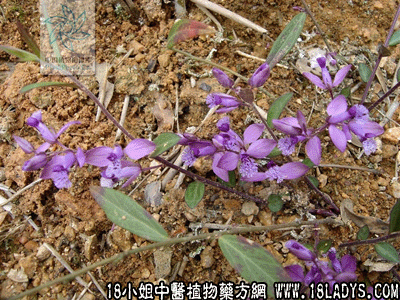

(本文解释权归中药材天地网兄弟站-18小姐中医植物药方网所有,如需转载请注明出处)

别名：蛤乸王、黄仙竹。
植物名：瓜子金。
生长环境：本品为多年生小草。生于丘陵、坡地或平坦旷野、路边，对旱地与湿地、沃土与瘠土均能适应。
分布：广东、广西、浙江、江苏、山东、贵州等省。
入药部分：全草。
采集期：夏、秋。
自采地点：大山。
性味：性温、味辛。
功能：散毒、止痒。
主治、用量和用法：1、麻疹不透：干用1至1.5钱，配伍透表药用；2、蛇咬伤：干用为末，每服3钱，白酒适量，炖40分钟，滤过服，其渣外敷患处，一日服敷两次。3、阴疽：干用为末，加冷饭等分捣匀，用白酒煮热，外敷患处；4、流注疮：用法同上。
验方：（治阴疽流注经验方）蛤乸王、如意草、入地金牛、黄羌、薄荷、紫苏各等分，共为细末，加酒、葱、糖适量，煮热敷患处。主治一切阴性疮疽、痰湿流注、漫肿无头、皮色不变者。
（方解）气虚血弱，复因寒凝痰结，乃生阴疽流注。本方以蛤乸王为主，取其辛温散寒、专攻痰结、善治阴疮。配以金牛祛风行气，散毒消肿，佐以治疗阴疽流注，初起者能打回，已成者自溃，已溃者拔毒。毒尽自愈。
（方歌）阴疽流注蛤乸王，金牛紫苏薄荷藏、黄羌合入如意草，趁热敷加羌酒糖。
(本文解释权归中药材天地网兄弟站-18小姐中医植物药方网所有,如需转载请注明出处)